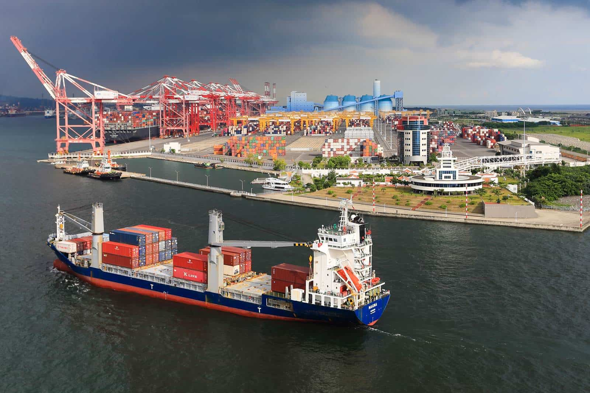

我國的經濟建設，在政府正確政策的領導下，結合國人智慧，歷經50年苦心經營，經濟已邁向以服 務業與工業為主的國家。經濟發展的目標，一向是成長與穩定並重，在求富的過程中兼顧所得分配 的平均，以普遍提高人民生活水準及素質。
自民國42年實施第一期4年經建計畫至民國87年，經濟成長率平均每年達8.0％。物價方面，除2次 石油危機時期上升幅度較大外，其他各年物價均相當穩定；尤以民國五○年代最為突出，消費者物價 平均每年僅上漲3.3％，同期間，經濟成長率平均每年達10.2％，為世界上能同時達成經濟快速成長 及物價穩定的少數國家之一。由於經濟快速成長，每人國民生產毛額，由民國41年196美元，大幅提 高到民國87年平均每人國民生產毛額12,040美元，人民生活水準有顯著的改善。開發中國家為創造大 量的就業機會及累積所得，以促進經濟的快速發展，無不加速工業發展。我國工業發展甚為迅速，民 國42年至民國87年平均每年成長率高達10.3％，為支應我國平均每年經濟成長率8.3％的重要因素。
過去五十多年來，台灣創造了舉世矚目的經濟奇蹟，而產業結構，也從勞力密集成功轉型為技術層次 高與附加價值高的工業型態。我國在2002年加入世界貿易組織，政府除積極參與WTO回合談判，並透過 雙邊工業合作會議、定期組團互訪交流，促進與各國實質經貿關係，協助產業取得關鍵技術、外銷訂 單及投資機會。
 圖片來源: 天下雜誌
台灣經濟發展小知識:
出口導向時期（1959-1972）
由於美國等先進國家欲將勞力密集產業外移，官僚為吸引外人投資，決定採取自由開放、 鼓勵出口等政策，由出口帶動生產。1963年至1996年平均經濟成長率超過9%。1963年台灣 對外貿易首次出超，開始有了外匯累積。台灣逐漸由農業社會轉為工業社會，電器、紡織、 塑膠等輕工業快速成長。